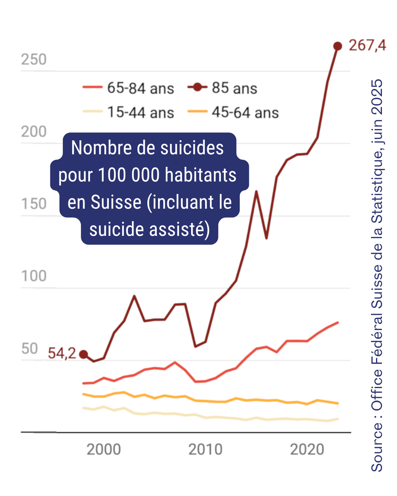
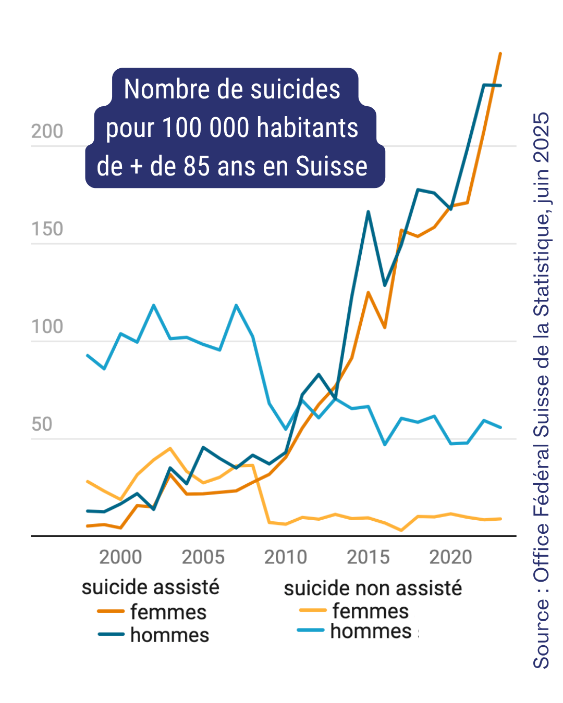

Alors que la Suisse a dépénalisé en 1942 le suicide assisté de manière implicite, la mort sur demande est en train de s’imposer comme une manière normale de quitter la vie quand on est âgé, et particulièrement une femme âgée.
En 25 ans, le nombre de suicides chez les 65-84 ans a doublé, et quadruplé chez les plus de 85 ans. En 2023, 80% des suicides chez les 65-84 ans étaient des suicides assistés, et 90% chez les plus de 85 ans.
De plus, les femmes âgées, qui se suicidaient peu auparavant, tendent à rattraper les statistiques du suicide masculin par le biais du suicide assisté.
« Pourquoi les femmes ont-elles majoritairement recours au suicide assisté depuis les années 2010, ce qui a fait grimper leur taux de suicide ? "Parce qu’elles survivent à leurs époux et se retrouvent seules, souvent avec des polypathologies et ont la volonté de choisir leur fin de vie", estime le co-président d’Exit, dont 65% des membres sont des femmes. »
À une société qui s’accommode de la solitude et de la détresse de ses aîné·es, qui les isole dans des institutions spécialisées et leur permet de mourir sur demande, nous opposons un projet politique et social qui valorise le soin, l’interdépendance, la solidarité, jusqu’au bout de la vie.
